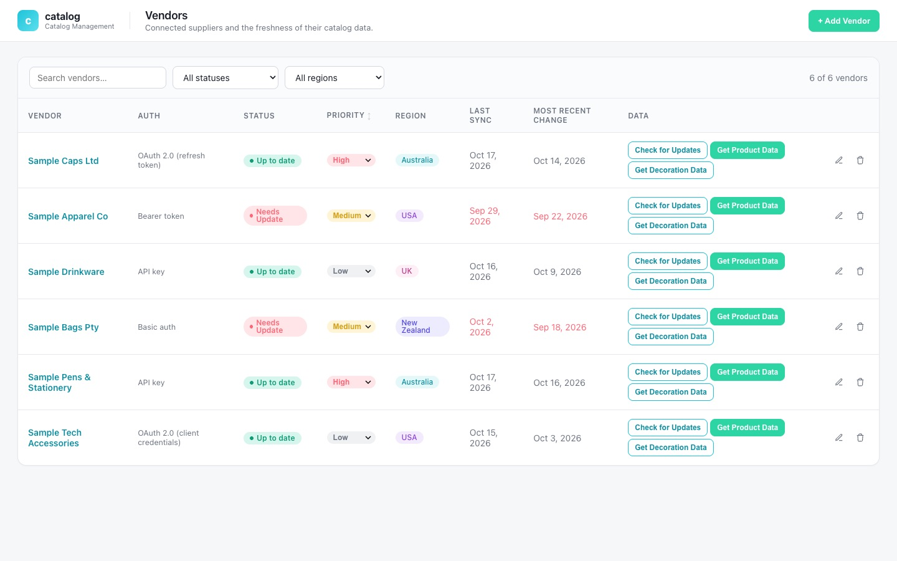
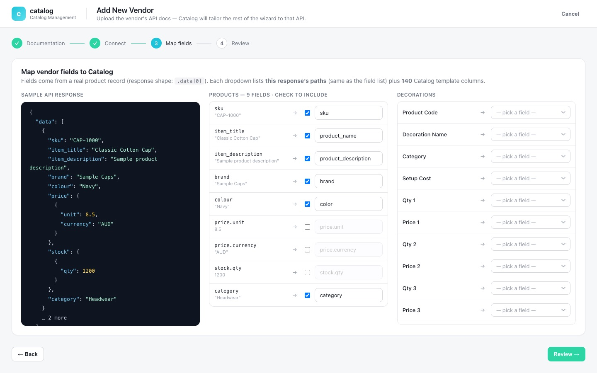

Case study · AI & automation
AI-assisted supplier catalog sync platform
Connects supplier APIs and feeds to one product and pricing format, with AI-drafted connector specs and field mappings, and CSV export.
At a glance
- Who it's for
- Operations and catalog staff who onboard suppliers and keep product data current.
- Core stack
- Node.js, TypeScript, PostgreSQL, OpenAI
- What sets it apart
- An onboarding workflow that turns supplier API documents into tested, repairable connectors feeding one normalized CSV export.
What it looks like in use
The vendor list a catalog team works from, and the guided steps for adding a new supplier.
VendorsConnected suppliers and the freshness of their catalog data.+ Add Vendor
Vendor list
Sample Caps Ltd
Australia, priority HighUp to date
Australia, priority HighUp to date
Sample Apparel Co
USA, priority MediumNeeds Update
USA, priority MediumNeeds Update
Sample Drinkware
UK, priority LowUp to date
UK, priority LowUp to date
Sample Bags Pty
New Zealand, priority MediumNeeds Update
New Zealand, priority MediumNeeds Update
Check for UpdatesGet Decoration DataGet Product Data
Add New Vendor
1 DocumentationDone
2 ConnectDone
3 Map fieldsIn progress
4 ReviewNext
Map vendor fields to the catalog format
skuSKU
item_titleProduct name
Real screens from the working product (sample data)


Adding a supplier, step by step
-
Priya adds a new supplier
She enters the supplier name and region in a short form.
-
She uploads the supplier documents
The supplier's own instructions go in as a PDF, so nobody has to retype them.
-
AI drafts the setup, she checks it
AI reads the supplier's documentation and proposes how its fields fit the standard format; for script-based suppliers, a coding agent writes the sync script from a written contract. Priya reviews it all.
-
She tests it with real sample rows
Before saving, she checks the connection and previews a few real products.
-
Updates are checked, then downloaded
She checks for updates and downloads product or decoration data as CSV; long downloads run as tracked background jobs she can watch.
The challenge
Businesses that resell decorated apparel and promotional goods pull catalogs from many suppliers. Each supplier exposes a different API, auth scheme and field vocabulary, with separate decoration price breaks.
Onboarding one supplier usually means a developer reading its documentation and hand-writing an integration. The project records the pain points explicitly: very large catalogs, OAuth refresh tokens that invalidate on use, APIs with no change detection, and silent failures when a script reads the wrong source field names.
The solution
A web console and Node API where an operator registers a supplier, uploads its API documentation as a PDF and lets AI read it to draft the connector spec and field mapping. For script-based suppliers, any AI coding agent writes the sync script from a written contract, and the platform's AI identifies the credential fields a script needs and repairs failing scripts. The operator tests the connection and previews sample rows.
Source fields are mapped onto a fixed destination schema, split into product and decoration outputs. Decoration output supports up to 25 price breaks, and mapped data is exported as CSV on demand. A retrying queue worker for scheduled syncs is built into the service; operator-triggered checks and exports currently run on demand. A written contract guide lets any external coding agent produce compatible supplier scripts.
For your technical teamhow it works under the hood
Mechanism: from supplier docs to an on-demand check and export
Key features
What the system does, as built in the codebase.
- 01
Vendor registry
One record per supplier with region, priority, status, spec, mapping and last-update markers.
- 02
AI documentation analysis
Uploaded PDF documentation is parsed and read by AI to draft the connector spec (endpoints, auth) and field mapping.
- 03
Script-based connectors
Python sync scripts, written by any AI coding agent from a written contract, are analyzed and tested in a child process with a timeout; the platform's AI identifies the credential fields a script needs and repairs scripts that fail.
- 04
Fixed destination schema
Each source field is routed to a product or decoration output, with separate decoration mappings.
- 05
Connection test and live sample fetch
Verify credentials and preview real records before saving.
- 06
Change detection
A per-supplier update check tells the operator whether a catalog changed since the last download, and flags APIs that cannot report changes.
- 07
Credential rotation persistence
Scripts can report refreshed tokens, which are stored for the next run.
- 08
CSV export and setup wizard
A guided setup wizard in the browser console, a searchable, filterable and sortable suppliers table, a per-supplier activity trail with Slack alerts on failed checks, and CSV export of mapped rows.
How it fits together
From a supplier's documentation to a normalized CSV export.
- Operator consolevanilla JS wizard
- REST APIExpress and Helmet
- AI analysisLLM and PDF parsing
- Connector engineAPI fetch and Python scripts
- Normalized CSV exportmapped on demand, not stored
- Queue workerbuilt, not yet wired to the console
- The console talks to the API for setup and testing; the API calls AI for spec drafting.
- The API runs the connector engine directly for update checks and exports; long downloads run as in-process tracked jobs the console polls.
- The queue worker (BullMQ with retries and per-run records) is built but not yet wired to the console.
Implementation notes
Engineering decisions worth knowing about.
Retrying queue worker (not yet wired)
A Redis-backed BullMQ queue with 3 attempts, exponential backoff and per-run records is built, with a worker started alongside the API process. Nothing enqueues from the console yet: update checks run synchronously in the request, and product, decoration and CSV exports run as in-process tracked jobs polled by the client.
Flexible schema
PostgreSQL with JSONB for specs and mappings, versioned connector specs marked as preset, AI or manual, and a sync job ledger.
Incremental SQL migrations applied at start-up
Incremental SQL migrations are applied in order when the service starts.
Credential handling
Credentials are kept in a dedicated column, never returned to the console list view, and only obfuscated rather than strongly encrypted; moving to a managed key store (KMS or vault) is flagged in the code before production.
Large-catalog handling
The script timeout is configurable for very large catalogs.
Operational basics
Helmet security headers, Winston logging, a per-supplier activity log and Slack alerts on failed checks. A Vitest suite (about 130 cases) covers controllers, services, the script runner and credential handling.
Containerized setup
Docker Compose for local Postgres and Redis, and a Railway build config.
Technology stack
Taken from the project's dependency and config files.
- Backend
- Node.js
- TypeScript
- Express
- Helmet
- Winston
- Multer (PDF upload)
- Vitest
- Queue
- BullMQ
- Redis (ioredis)
- Data
- PostgreSQL
- JSONB mappings
- AI
- OpenAI SDK
- pdf-parse
- Connector scripts
- Python
- Frontend
- Vanilla JavaScript SPA served by the API
- Infrastructure
- Docker
- Docker Compose
- Railway
For your technical teamtechnology layers
Technology stack by layer
Business value
What the system enables. No numbers are claimed.
- Drafts the connector and mapping from the supplier's documentation, so a developer starts from a reviewable draft.
- Gives one consistent product and decoration-pricing format regardless of supplier quirks.
- Every operator action is logged to a per-vendor activity trail.
- Lets operators use a guided setup, and lets external coding agents build compatible scripts through a documented contract.
Need a system like this built?
Tell us what it needs to do and we will scope it with you on a call.